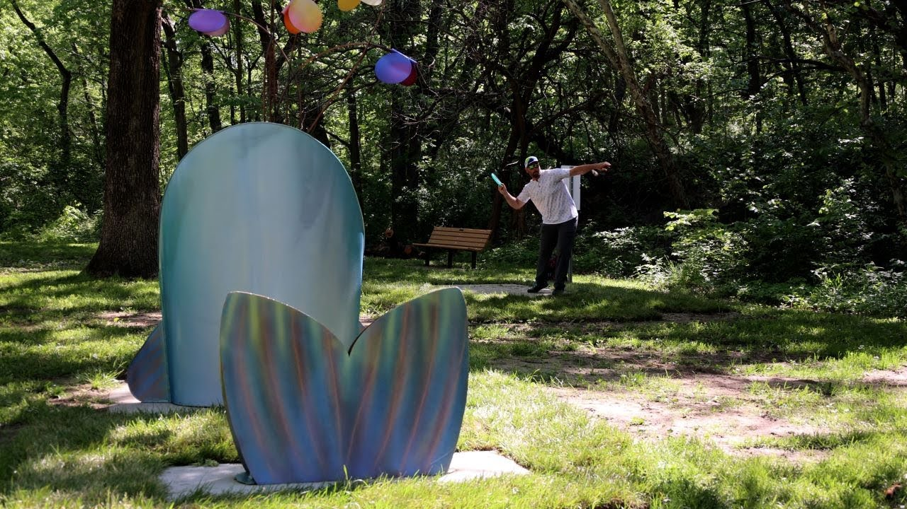
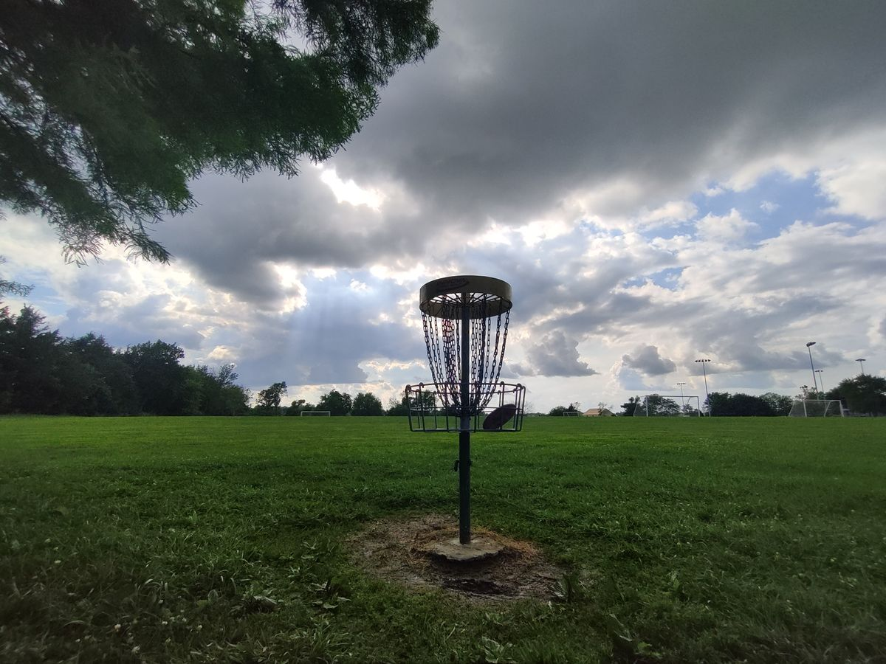
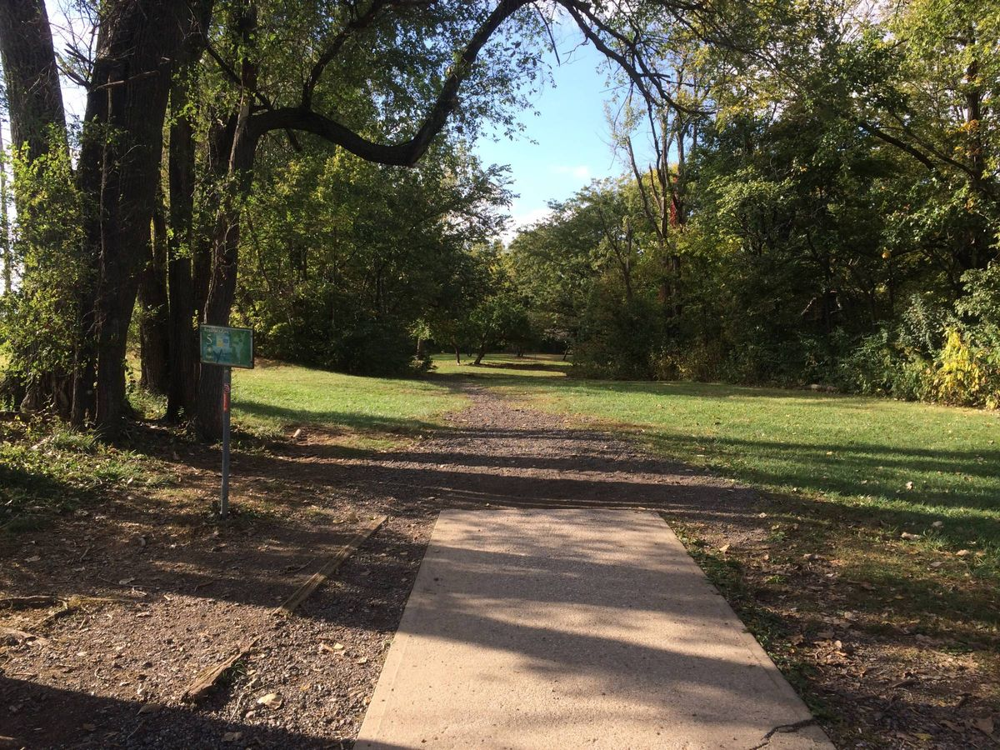
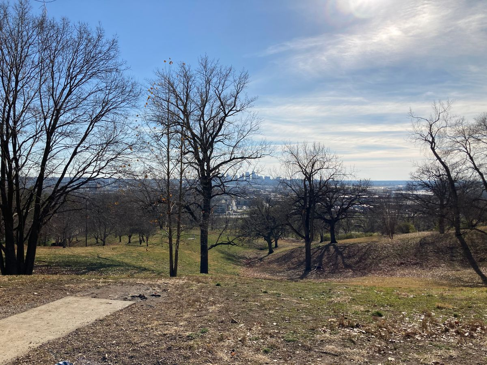
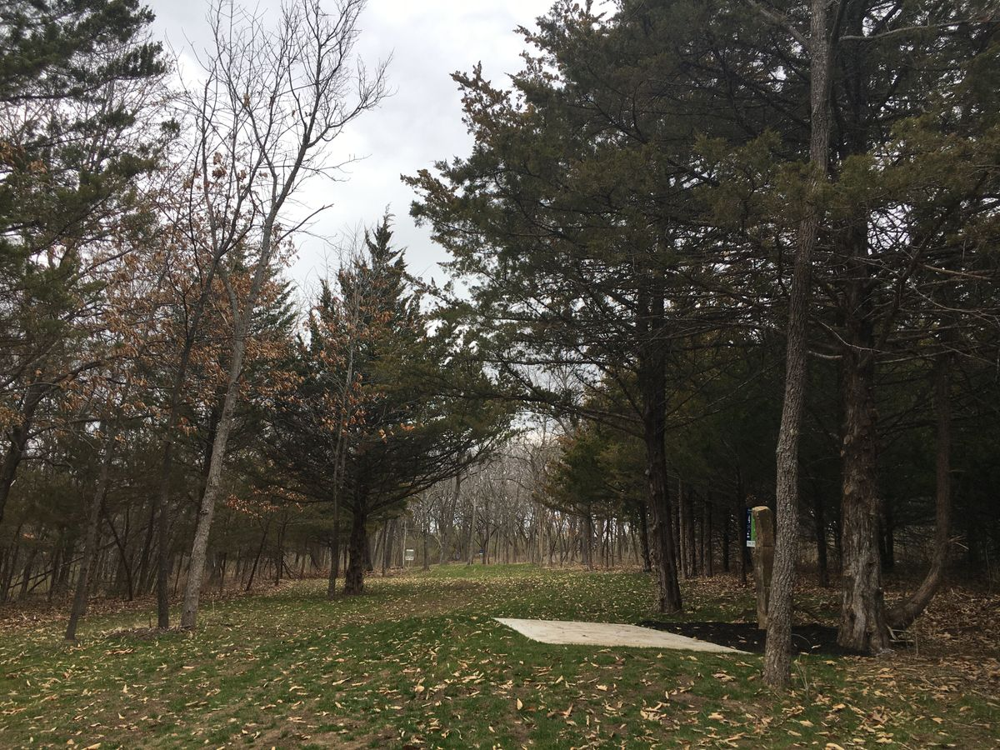

With over 30 courses to choose from, there's something for everyone to enjoy.

The Art Nine at Shawnee Mission Park offers a great beginner course for all ages to enjoy. The course consists of 9 short holes featuring locally sculpted art.

Located in Olathe, KS, Prairie Center Park offers a step up in difficulty from the Art Nine. Featuring 18 holes and a mix of open and wooded terrain, the course remains mostly flat and 'fair,' making it a great choice for intermediate players working on their drive.

Rosedale Park serves as the heart of KC disc golf. If you're looking for other people to share this experience with, Rosedale holds the essence of the KC disc golf community.You will find a mix of players of all ages and skill levels enjoying the 18 hole course Rosedale Park has to offer.

The difficulty continues to increase with Water Works Park, famous for its massive elevation changes and "death putts." It's a physical workout with incredible views of the KC skyline, but one bad roll-away can ruin your score.

Widely considered one of the hardest courses in the region. Between the tight wooded lines and the long distances over rugged terrain, this course requires "pro-level" accuracy and distance.